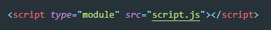
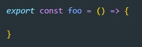
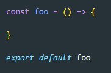
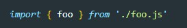
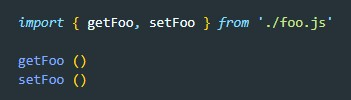
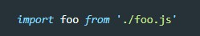

Для того что бы использовать модульность, при объявлении файла со скриптом, тегу script нужно прописывать атрибут type="module"
Для того что бы что-то импортировать, кто-то должен это экспортировать
Экспортировать можно двумя способами
1 способ
Т.е. мы экспортируем функцию foo, которую теперь можно использовать в разных файлах со скриптами. Таких экспортом в файле может быть сколько угодно.
2 способ (dafault)
Т.е. сначала мы объявляем функцию, а затем указываем что эту функцию мы экспортируем по default
Чем это способ отличается от первого? При экспорте default мы можем экспортировать что-то одно.
В зависимости от того, какой способ был использован в экспорте, импортировать мы будем по разному. При первом способе экспорта, импорт будет выглядеть вот так:
./foo.js - это относительный путь до файла, который содержит функцию foo
В случае если импортируется несколько функций из одного файла, то названия функций указываются в фигурных скобках через запятую
Важно что бы названия импортируемых элементов совпадало с названием экспорта
Если экспорт был осуществлен по default, то импорт будет выглядеть вот так:
Здесь название импортируемого элемента не важно, можем назвать его как угодно